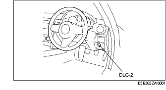

Troubleshooting ➭ TRANSMISSION/TRANSAXLE ➭ PID/DATA MONITOR INSPECTION [SJ6A-EL]
PID/DATA MONITOR INSPECTION [SJ6A-EL]
id050208805600
{: #wp1059783}
- Connect the M-MDS to the DLC-2.{: #wp1065615}

- After the vehicle is identified, select the following items from the initial screen of the M-MDS.
• When using the IDS (laptop PC)
- Select the "Toolbox" tab. {: #wp1059837}2. Select "DataLogger". {: #wp1059855}3. Select "Modules". {: #wp1059869}4. Select "TCM".
• When using the PDS (Pocket PC)
-
Select "Module Tests". {: #wp1059907}2. Select "TCM". {: #wp1059925}3. Select "DataLogger".
-
Select the PID from the PID table.
-
Verify the PID data according to the directions on the M-MDS screen.
*Note*{: #wp1059974}
• Perform part inspection for the output device after TCM inspection. {: #wp1065523}• The PID/DATA MONITOR function monitors the calculated value of the input/output signals in the TCM. Therefore, if a monitored value of an output device is out of specification, it is necessary to inspect the monitored value of the input device related to the output device control. Since an output device malfunction is not directly indicated as a malfunction of the monitored value for the output device, it is necessary to inspect the output device individually using the simulation function.
**PID/DATA MONITOR AND RECORD function table
+-----------------------------------------------------------------------------+-----------------------------------+------------------------------------------------------------------------------------------------------------------------------------------------------------------------------------------------------+-------------------------------------------------------------------------------------------------------------------------------------------------------------------------------------------------------------------------------------------------------------------------------------------------------------------------------------------------------------------------------------------------------------------------------------------------------------------+---------------------------------+ | Monitor item (Definition) {: #wp1060146} | Unit/Condition {: #wp1060148} | Condition/Specification {: #wp1060150} | Action {: #wp1060152} | TCM terminal {: #wp1060154} | +=============================================================================+===================================+======================================================================================================================================================================================================+===================================================================================================================================================================================================================================================================================================================================================================================================================================================================+=================================+ | BOO TCM {: #wp1060016} (Brake switch) {: #wp1060297} | On/Off {: #wp1060018} | • Brake pedal depressed: On {: #wp1060074} • Other: Off {: #wp1060323} | Inspect the brake switch. {: #wp1060077} (See BRAKE SWITCH INSPECTION.) {: #wp1060338} | N/A {: #wp1060080} | +-----------------------------------------------------------------------------+-----------------------------------+------------------------------------------------------------------------------------------------------------------------------------------------------------------------------------------------------+-------------------------------------------------------------------------------------------------------------------------------------------------------------------------------------------------------------------------------------------------------------------------------------------------------------------------------------------------------------------------------------------------------------------------------------------------------------------+---------------------------------+ | DTCCNT {: #wp1060181} | N/A {: #wp1060184} | Indicates number of DTC {: #wp1060187} | Check DTC. {: #wp1060190} (See DTC TABLE [SJ6A-EL].) {: #wp1060381} | N/A {: #wp1060193} | +-----------------------------------------------------------------------------+-----------------------------------+------------------------------------------------------------------------------------------------------------------------------------------------------------------------------------------------------+-------------------------------------------------------------------------------------------------------------------------------------------------------------------------------------------------------------------------------------------------------------------------------------------------------------------------------------------------------------------------------------------------------------------------------------------------------------------+---------------------------------+ | DWN SW {: #wp1060197} (Down switch) {: #wp1060407} | On/Off {: #wp1060200} | • Down shift at M range: On {: #wp1060203} • Other: Off {: #wp1060433} | Inspect the selector lever component. {: #wp1060206} (See SELECTOR LEVER COMPONENT INSPECTION.) {: #wp1060448} | 2F {: #wp1060209} | +-----------------------------------------------------------------------------+-----------------------------------+------------------------------------------------------------------------------------------------------------------------------------------------------------------------------------------------------+-------------------------------------------------------------------------------------------------------------------------------------------------------------------------------------------------------------------------------------------------------------------------------------------------------------------------------------------------------------------------------------------------------------------------------------------------------------------+---------------------------------+ | ECT TCM {: #wp1060213} (ECT) {: #wp1060472} | °C {: #wp1060216} | Indicates ECT {: #wp1060219} | • Inspect the ECT sensor. {: #wp1060222} (See ENGINE COOLANT TEMPERATURE (ECT) SENSOR INSPECTION [L8, LF].) {: #wp1060502} • Inspect the PCM. {: #wp1060516} (See PCM INSPECTION [L8, LF].) {: #wp1060526} | N/A {: #wp1060225} | +-----------------------------------------------------------------------------+-----------------------------------+------------------------------------------------------------------------------------------------------------------------------------------------------------------------------------------------------+-------------------------------------------------------------------------------------------------------------------------------------------------------------------------------------------------------------------------------------------------------------------------------------------------------------------------------------------------------------------------------------------------------------------------------------------------------------------+---------------------------------+ | FDPDTC {: #wp1060229} (FREEZE FRAME DATA) {: #wp1060552} | N/A {: #wp1060232} | Indicates code of FREEZE FRAME DATA {: #wp1060235} | N/A {: #wp1060238} | N/A {: #wp1060241} | +-----------------------------------------------------------------------------+-----------------------------------+------------------------------------------------------------------------------------------------------------------------------------------------------------------------------------------------------+-------------------------------------------------------------------------------------------------------------------------------------------------------------------------------------------------------------------------------------------------------------------------------------------------------------------------------------------------------------------------------------------------------------------------------------------------------------------+---------------------------------+ | GEAR_RA {: #wp1060245} (Gear ratio) {: #wp1060591} | N/A {: #wp1060248} | 1GR: 3.538 {: #wp1060251} 2GR: 2.060 {: #wp1060617} 3GR: 1.404 {: #wp1060627} 4GR: 1.000 {: #wp1060637} 5GR: 0.713 {: #wp1060647} 6GR: 0.582 {: #wp1060657} • R position: 3.168 {: #wp1060667} | Inspect following PIDs: OSS, SSA, SSB, SSC, SSD, SSE, SSF, SSG, THOP, TSS, VSS {: #wp1060254} | N/A {: #wp1060257} | +-----------------------------------------------------------------------------+-----------------------------------+------------------------------------------------------------------------------------------------------------------------------------------------------------------------------------------------------+-------------------------------------------------------------------------------------------------------------------------------------------------------------------------------------------------------------------------------------------------------------------------------------------------------------------------------------------------------------------------------------------------------------------------------------------------------------------+---------------------------------+ | GEAR_SEL {: #wp1060687} (Calculated gear range in TCM) {: #wp1060722} | 1/2/3/4/5/6 {: #wp1060690} | 1GR: 1 {: #wp1060693} 2GR: 2 {: #wp1060756} 3GR: 3 {: #wp1060766} 4GR: 4 {: #wp1060776} 5GR: 5 {: #wp1060786} 6GR: 6 {: #wp1060796} | Inspect following PIDs: SSA, SSB, SSC, SSD, SSE, SSF, SSG, THOP, TSS, VSS {: #wp1060696} | N/A {: #wp1060699} | +-----------------------------------------------------------------------------+-----------------------------------+------------------------------------------------------------------------------------------------------------------------------------------------------------------------------------------------------+-------------------------------------------------------------------------------------------------------------------------------------------------------------------------------------------------------------------------------------------------------------------------------------------------------------------------------------------------------------------------------------------------------------------------------------------------------------------+---------------------------------+ | LPS {: #wp1060816} (Line pressure control solenoid) {: #wp1060849} | A {: #wp1060819} | • D range, 1GR (idle): 996 mA {: #wp1060822} • D range, 3GR: 656 mA {: #wp1060879} • R position: 719 mA {: #wp1060895} | Inspect the line pressure control solenoid. {: #wp1060825} (See SOLENOID VALVE INSPECTION [SJ6A-EL].) {: #wp1060916} | 1E, 1R {: #wp1060828} | +-----------------------------------------------------------------------------+-----------------------------------+------------------------------------------------------------------------------------------------------------------------------------------------------------------------------------------------------+-------------------------------------------------------------------------------------------------------------------------------------------------------------------------------------------------------------------------------------------------------------------------------------------------------------------------------------------------------------------------------------------------------------------------------------------------------------------+---------------------------------+ | MNL SW {: #wp1060933} (M range switch) {: #wp1060971} | On/Off {: #wp1060936} | • M range: On {: #wp1060939} • Other: Off {: #wp1060997} | Inspect the selector lever component. {: #wp1060942} (See SELECTOR LEVER COMPONENT INSPECTION.) {: #wp1061012} | 2G {: #wp1060945} | +-----------------------------------------------------------------------------+-----------------------------------+------------------------------------------------------------------------------------------------------------------------------------------------------------------------------------------------------+-------------------------------------------------------------------------------------------------------------------------------------------------------------------------------------------------------------------------------------------------------------------------------------------------------------------------------------------------------------------------------------------------------------------------------------------------------------------+---------------------------------+ | OSS {: #wp1061029} (Output shaft speed) {: #wp1061069} | RPM {: #wp1061032} | • Vehicle speed 40 km/h {25 mph}: 3,800 RPM {: #wp1061035} • Indicates output shaft speed {: #wp1061105} | Inspect the VSS. {: #wp1061038} (See VEHICLE SPEED SENSOR (VSS) INSPECTION [SJ6A-EL].) {: #wp1061120} | 2C, 2D {: #wp1061041} | +-----------------------------------------------------------------------------+-----------------------------------+------------------------------------------------------------------------------------------------------------------------------------------------------------------------------------------------------+-------------------------------------------------------------------------------------------------------------------------------------------------------------------------------------------------------------------------------------------------------------------------------------------------------------------------------------------------------------------------------------------------------------------------------------------------------------------+---------------------------------+ | PNP_TCM {: #wp1061137} (Park/Neutral) {: #wp1061182} | Drive/Neutral {: #wp1061140} | • P, N position: Neutral {: #wp1061143} • D, M range or R position: Drive {: #wp1061210} | Inspect the TR switch. {: #wp1061146} (See TRANSMISSION RANGE (TR) SWITCH INSPECTION [SJ6A-EL].) {: #wp1061225} | 2K, 2M, 2N, 2O {: #wp1061149} | +-----------------------------------------------------------------------------+-----------------------------------+------------------------------------------------------------------------------------------------------------------------------------------------------------------------------------------------------+-------------------------------------------------------------------------------------------------------------------------------------------------------------------------------------------------------------------------------------------------------------------------------------------------------------------------------------------------------------------------------------------------------------------------------------------------------------------+---------------------------------+ | RPM TCM {: #wp1061242} (Engine speed) {: #wp1061287} | RPM {: #wp1061245} | • Ignition switch ON: 0 rpm {: #wp1061248} • Idle: 700-800 rpm {: #wp1061317} | • Inspect the CMP sensor. {: #wp1061251} (See CAMSHAFT POSITION (CMP) SENSOR INSPECTION [L8, LF].) {: #wp1061348} • Inspect the PCM. {: #wp1061362} (See PCM INSPECTION [L8, LF].) {: #wp1061372} | N/A {: #wp1061254} | +-----------------------------------------------------------------------------+-----------------------------------+------------------------------------------------------------------------------------------------------------------------------------------------------------------------------------------------------+-------------------------------------------------------------------------------------------------------------------------------------------------------------------------------------------------------------------------------------------------------------------------------------------------------------------------------------------------------------------------------------------------------------------------------------------------------------------+---------------------------------+ | SS SW- {: #wp1061391} (Steering shift switch (down switch)) {: #wp1061443} | On/Off {: #wp1061394} | M range {: #wp1061397} • Steering shift down switch on: On {: #wp1061461} • Other: Off {: #wp1061475} | Inspect the steering shift switch. {: #wp1061400} (See STEERING SHIFT SWITCH INSPECTION.) {: #wp1061490} | 2AB, 2AF {: #wp1061403} | +-----------------------------------------------------------------------------+-----------------------------------+------------------------------------------------------------------------------------------------------------------------------------------------------------------------------------------------------+-------------------------------------------------------------------------------------------------------------------------------------------------------------------------------------------------------------------------------------------------------------------------------------------------------------------------------------------------------------------------------------------------------------------------------------------------------------------+---------------------------------+ | SS SW+ {: #wp1061507} (Steering shift switch (up switch)) {: #wp1061561} | On/Off {: #wp1061510} | M range {: #wp1061513} • Steering shift up switch on: On {: #wp1061579} • Other: Off {: #wp1061593} | Inspect the steering shift switch. {: #wp1061516} (See STEERING SHIFT SWITCH INSPECTION.) {: #wp1061608} | 2AB, 2AF {: #wp1061519} | +-----------------------------------------------------------------------------+-----------------------------------+------------------------------------------------------------------------------------------------------------------------------------------------------------------------------------------------------+-------------------------------------------------------------------------------------------------------------------------------------------------------------------------------------------------------------------------------------------------------------------------------------------------------------------------------------------------------------------------------------------------------------------------------------------------------------------+---------------------------------+ | SSA {: #wp1061625} (Shift solenoid A) {: #wp1061680} | On/Off {: #wp1061628} | 2GR, 3GR, 4GR, 5GR, 6GR: On {: #wp1061631} 1GR: Off {: #wp1061706} | Inspect the shift solenoid A. {: #wp1061634} (See SOLENOID VALVE INSPECTION [SJ6A-EL].) {: #wp1061721} | 1AF {: #wp1061637} | +-----------------------------------------------------------------------------+-----------------------------------+------------------------------------------------------------------------------------------------------------------------------------------------------------------------------------------------------+-------------------------------------------------------------------------------------------------------------------------------------------------------------------------------------------------------------------------------------------------------------------------------------------------------------------------------------------------------------------------------------------------------------------------------------------------------------------+---------------------------------+ | SSB {: #wp1061738} (Shift solenoid B) {: #wp1061795} | On/Off {: #wp1061741} | 1GR, 2GR, 6GR: On {: #wp1061744} 3GR, 4GR, 5GR: Off {: #wp1061821} | Inspect the shift solenoid B. {: #wp1061747} (See SOLENOID VALVE INSPECTION [SJ6A-EL].) {: #wp1061836} | 1AB {: #wp1061750} | +-----------------------------------------------------------------------------+-----------------------------------+------------------------------------------------------------------------------------------------------------------------------------------------------------------------------------------------------+-------------------------------------------------------------------------------------------------------------------------------------------------------------------------------------------------------------------------------------------------------------------------------------------------------------------------------------------------------------------------------------------------------------------------------------------------------------------+---------------------------------+ | SSC {: #wp1061853} (Shift solenoid C) {: #wp1061912} | On/Off {: #wp1061856} | 1GR, 2GR, 3GR: On {: #wp1061859} 4GR, 5GR, 6GR: Off {: #wp1061938} | Inspect the shift solenoid C. {: #wp1061862} (See SOLENOID VALVE INSPECTION [SJ6A-EL].) {: #wp1061953} | 1AA {: #wp1061865} | +-----------------------------------------------------------------------------+-----------------------------------+------------------------------------------------------------------------------------------------------------------------------------------------------------------------------------------------------+-------------------------------------------------------------------------------------------------------------------------------------------------------------------------------------------------------------------------------------------------------------------------------------------------------------------------------------------------------------------------------------------------------------------------------------------------------------------+---------------------------------+ | SSD {: #wp1061970} (Shift solenoid D) {: #wp1062031} | On/Off {: #wp1061973} | 5GR, 6GR: On {: #wp1061976} 1GR, 2GR, 3GR, 4GR: Off {: #wp1062057} | Inspect the shift solenoid D. {: #wp1061979} (See SOLENOID VALVE INSPECTION [SJ6A-EL].) {: #wp1062072} | 1S {: #wp1061982} | +-----------------------------------------------------------------------------+-----------------------------------+------------------------------------------------------------------------------------------------------------------------------------------------------------------------------------------------------+-------------------------------------------------------------------------------------------------------------------------------------------------------------------------------------------------------------------------------------------------------------------------------------------------------------------------------------------------------------------------------------------------------------------------------------------------------------------+---------------------------------+ | SSE {: #wp1062089} (Shift solenoid E) {: #wp1062152} | On/Off {: #wp1062092} | 1GR, 2GR, 3GR, 4GR: On {: #wp1062095} 5GR, 6GR: Off {: #wp1062178} | Inspect the shift solenoid E. {: #wp1062098} (See SOLENOID VALVE INSPECTION [SJ6A-EL].) {: #wp1062193} | 1V {: #wp1062101} | +-----------------------------------------------------------------------------+-----------------------------------+------------------------------------------------------------------------------------------------------------------------------------------------------------------------------------------------------+-------------------------------------------------------------------------------------------------------------------------------------------------------------------------------------------------------------------------------------------------------------------------------------------------------------------------------------------------------------------------------------------------------------------------------------------------------------------+---------------------------------+ | SSF {: #wp1062210} (Shift solenoid F) {: #wp1062275} | A {: #wp1062213} | 5GR, 6GR: 996 mA {: #wp1062216} 1GR, 2GR, 3GR, 4GR: 199 mA {: #wp1062305} | Inspect the shift solenoid F. {: #wp1062219} (See SOLENOID VALVE INSPECTION [SJ6A-EL].) {: #wp1062326} | 1O, 1Z {: #wp1062222} | +-----------------------------------------------------------------------------+-----------------------------------+------------------------------------------------------------------------------------------------------------------------------------------------------------------------------------------------------+-------------------------------------------------------------------------------------------------------------------------------------------------------------------------------------------------------------------------------------------------------------------------------------------------------------------------------------------------------------------------------------------------------------------------------------------------------------------+---------------------------------+ | SSG {: #wp1062343} (Shift solenoid G) {: #wp1062412} | A {: #wp1062346} | 1GR, 2GR, 3GR, 4GR: 996 mA {: #wp1062349} 5GR, 6GR: 199 mA {: #wp1062442} | Inspect the shift solenoid G. {: #wp1062352} (See SOLENOID VALVE INSPECTION [SJ6A-EL].) {: #wp1062463} | 1L, 1Y {: #wp1062355} | +-----------------------------------------------------------------------------+-----------------------------------+------------------------------------------------------------------------------------------------------------------------------------------------------------------------------------------------------+-------------------------------------------------------------------------------------------------------------------------------------------------------------------------------------------------------------------------------------------------------------------------------------------------------------------------------------------------------------------------------------------------------------------------------------------------------------------+---------------------------------+ | TCCC {: #wp1062480} (TCC solenoid valve) {: #wp1062553} | A {: #wp1062483} | • TCC on: 996 mA {: #wp1062486} • Other: 199 mA {: #wp1062583} | Inspect the TCC control solenoid. {: #wp1062489} (See SOLENOID VALVE INSPECTION [SJ6A-EL].) {: #wp1062604} | 1D, 1Q {: #wp1062492} | +-----------------------------------------------------------------------------+-----------------------------------+------------------------------------------------------------------------------------------------------------------------------------------------------------------------------------------------------+-------------------------------------------------------------------------------------------------------------------------------------------------------------------------------------------------------------------------------------------------------------------------------------------------------------------------------------------------------------------------------------------------------------------------------------------------------------------+---------------------------------+ | TFT {: #wp1062621} (ATF temperature) {: #wp1062698} | °C {: #wp1062624} | • ATF temperature 20 °C {68 °F}: 20 °C {: #wp1062627} • ATF temperature 40 °C {104 °F}: 40 °C {: #wp1062739} • ATF temperature 60 °C {140 °F}: 60 °C {: #wp1062765} | Inspect the TFT sensor. {: #wp1062630} (See TRANSMISSION FLUID TEMPERATURE (TFT) SENSOR INSPECTION [SJ6A-EL].) {: #wp1062796} | 1J, 1M {: #wp1062633} | +-----------------------------------------------------------------------------+-----------------------------------+------------------------------------------------------------------------------------------------------------------------------------------------------------------------------------------------------+-------------------------------------------------------------------------------------------------------------------------------------------------------------------------------------------------------------------------------------------------------------------------------------------------------------------------------------------------------------------------------------------------------------------------------------------------------------------+---------------------------------+ | TFTV {: #wp1062813} (ATF temperature signal voltage) {: #wp1062895} | V {: #wp1062816} | • ATF temperature 20 °C {68 °F}: 3 V {: #wp1062819} • ATF temperature 40 °C {104 °F}: 2.14 V {: #wp1062933} • ATF temperature 60 °C {140 °F}: 1.38 V {: #wp1062957} | Inspect the TFT sensor. {: #wp1062822} (See TRANSMISSION FLUID TEMPERATURE (TFT) SENSOR INSPECTION [SJ6A-EL].) {: #wp1062986} | 1J, 1M {: #wp1062825} | +-----------------------------------------------------------------------------+-----------------------------------+------------------------------------------------------------------------------------------------------------------------------------------------------------------------------------------------------+-------------------------------------------------------------------------------------------------------------------------------------------------------------------------------------------------------------------------------------------------------------------------------------------------------------------------------------------------------------------------------------------------------------------------------------------------------------------+---------------------------------+ | THOP {: #wp1063003} (Throttle position) {: #wp1063090} | % {: #wp1063006} | • CTP: 20% {: #wp1063009} • WOT: 89.8% {: #wp1063121} | • Inspect the TP sensor. {: #wp1063012} (See THROTTLE POSITION (TP) SENSOR INSPECTION [L8, LF].) {: #wp1063151} • Inspect the PCM. {: #wp1063165} (See PCM INSPECTION [L8, LF].) {: #wp1063175} | N/A {: #wp1063015} | +-----------------------------------------------------------------------------+-----------------------------------+------------------------------------------------------------------------------------------------------------------------------------------------------------------------------------------------------+-------------------------------------------------------------------------------------------------------------------------------------------------------------------------------------------------------------------------------------------------------------------------------------------------------------------------------------------------------------------------------------------------------------------------------------------------------------------+---------------------------------+ | TR {: #wp1063194} (TR switch) {: #wp1063287} | R/N/D/P {: #wp1063197} | • R position: R {: #wp1063200} • N position: N {: #wp1063317} • D range: D {: #wp1063327} • P position: P {: #wp1063337} | Inspect the TR switch. {: #wp1063203} (See TRANSMISSION RANGE (TR) SWITCH INSPECTION [SJ6A-EL].) {: #wp1063352} | 2K, 2M, 2N, 2O {: #wp1063206} | +-----------------------------------------------------------------------------+-----------------------------------+------------------------------------------------------------------------------------------------------------------------------------------------------------------------------------------------------+-------------------------------------------------------------------------------------------------------------------------------------------------------------------------------------------------------------------------------------------------------------------------------------------------------------------------------------------------------------------------------------------------------------------------------------------------------------------+---------------------------------+ | TRD {: #wp1063369} (TR switch [D range]) {: #wp1063464} | On/Off {: #wp1063372} | • D range: On {: #wp1063375} • Other ranges and all positions: Off {: #wp1063494} | Inspect the TR switch. {: #wp1063378} (See TRANSMISSION RANGE (TR) SWITCH INSPECTION [SJ6A-EL].) {: #wp1063509} | 2K {: #wp1063381} | +-----------------------------------------------------------------------------+-----------------------------------+------------------------------------------------------------------------------------------------------------------------------------------------------------------------------------------------------+-------------------------------------------------------------------------------------------------------------------------------------------------------------------------------------------------------------------------------------------------------------------------------------------------------------------------------------------------------------------------------------------------------------------------------------------------------------------+---------------------------------+ | TRR {: #wp1063526} (TR switch [R position]) {: #wp1063623} | On/Off {: #wp1063529} | • R position: On {: #wp1063532} • Other positions and all ranges: Off {: #wp1063653} | Inspect the TR switch. {: #wp1063535} (See TRANSMISSION RANGE (TR) SWITCH INSPECTION [SJ6A-EL].) {: #wp1063668} | 2M {: #wp1063538} | +-----------------------------------------------------------------------------+-----------------------------------+------------------------------------------------------------------------------------------------------------------------------------------------------------------------------------------------------+-------------------------------------------------------------------------------------------------------------------------------------------------------------------------------------------------------------------------------------------------------------------------------------------------------------------------------------------------------------------------------------------------------------------------------------------------------------------+---------------------------------+ | TSS {: #wp1063685} (Turbine shaft speed) {: #wp1063784} | RPM {: #wp1063688} | • Idle: 700-800 rpm {: #wp1063691} • Vehicle speed 40 km/h {25 mph}: 3,800 RPM {: #wp1063816} | Inspect the turbine sensor. {: #wp1063694} (See TURBINE SENSOR INSPECTION [SJ6A-EL].) {: #wp1063843} | 2A, 2B {: #wp1063697} | +-----------------------------------------------------------------------------+-----------------------------------+------------------------------------------------------------------------------------------------------------------------------------------------------------------------------------------------------+-------------------------------------------------------------------------------------------------------------------------------------------------------------------------------------------------------------------------------------------------------------------------------------------------------------------------------------------------------------------------------------------------------------------------------------------------------------------+---------------------------------+ | UP SW {: #wp1063860} (Up switch) {: #wp1063963} | On/Off {: #wp1063863} | • Up shift at M range: On {: #wp1063866} • Other: Off {: #wp1063989} | Inspect the selector lever component. {: #wp1063869} (See SELECTOR LEVER COMPONENT INSPECTION.) {: #wp1064004} | 2J {: #wp1063872} | +-----------------------------------------------------------------------------+-----------------------------------+------------------------------------------------------------------------------------------------------------------------------------------------------------------------------------------------------+-------------------------------------------------------------------------------------------------------------------------------------------------------------------------------------------------------------------------------------------------------------------------------------------------------------------------------------------------------------------------------------------------------------------------------------------------------------------+---------------------------------+ | VPWR_TCM {: #wp1064021} (Battery voltage) {: #wp1064128} | V {: #wp1064024} | Ignition switch at ON position: B+ {: #wp1064027} | • Inspect the ignition switch. {: #wp1064030} (See IGNITION SWITCH INSPECTION.) {: #wp1064158} • Inspect the battery. {: #wp1064172} (See BATTERY INSPECTION [L8, LF].) {: #wp1064182} | 1AD {: #wp1064033} | +-----------------------------------------------------------------------------+-----------------------------------+------------------------------------------------------------------------------------------------------------------------------------------------------------------------------------------------------+-------------------------------------------------------------------------------------------------------------------------------------------------------------------------------------------------------------------------------------------------------------------------------------------------------------------------------------------------------------------------------------------------------------------------------------------------------------------+---------------------------------+ | VSS {: #wp1064199} (Vehicle speed) {: #wp1064308} | KPH {: #wp1064202} | • Vehicle speed 40 km/h {25 mph}: 40 KPH {: #wp1064205} • Indicates vehicle speed {: #wp1064344} | Inspect the VSS. {: #wp1064208} (See VEHICLE SPEED SENSOR (VSS) INSPECTION [SJ6A-EL].) {: #wp1064359} | 2C, 2D {: #wp1064211} | +-----------------------------------------------------------------------------+-----------------------------------+------------------------------------------------------------------------------------------------------------------------------------------------------------------------------------------------------+-------------------------------------------------------------------------------------------------------------------------------------------------------------------------------------------------------------------------------------------------------------------------------------------------------------------------------------------------------------------------------------------------------------------------------------------------------------------+---------------------------------+**{: #wp1060006}
Simulation Function Procedure
- Connect the M-MDS to the DLC-2.{: #wp1064477}

- After the vehicle is identified, select the following items from the initial screen of the M-MDS.
• When using the IDS (laptop PC)
- Select the "Toolbox" tab. {: #wp1064553}2. Select "DataLogger". {: #wp1064571}3. Select "Modules". {: #wp1064585}4. Select "TCM".
• When using the PDS (Pocket PC)
-
Select "Module Tests". {: #wp1064623}2. Select "TCM". {: #wp1064641}3. Select "DataLogger".
-
Select the simulation items from the PID table.
-
Perform the simulation function, inspect the operations for each parts.
• If there is no operation sound from the solenoid after the simulation function inspection is performed, it is possible that there is an open or short circuit in the wiring harness, or solenoid, or sticking and operation malfunction.
Simulation item table
X: Available
|
Simulation item {: #wp1064871} |
Applicable component {: #wp1064873} |
Unit/Condition {: #wp1064875} |
Operation {: #wp1064877} |
TCM terminal {: #wp1064881} |
|
|---|---|---|---|---|---|
|
IG ON {: #wp1065035} |
Idle {: #wp1065038} |
||||
|
LPS {: #wp1064717} |
Pressure control solenoid {: #wp1064719} |
A {: #wp1064775} |
N/A {: #wp1064778} |
X {: #wp1064781} |
1E, 1R {: #wp1064784} |
|
SSA {: #wp1064912} |
Shift solenoid A {: #wp1064915} |
On/Off {: #wp1064918} |
N/A {: #wp1064921} |
X {: #wp1064924} |
1AF {: #wp1064927} |
|
SSB {: #wp1064931} |
Shift solenoid B {: #wp1064934} |
On/Off {: #wp1064937} |
N/A {: #wp1064940} |
X {: #wp1064943} |
1AB {: #wp1064946} |
|
SSC {: #wp1064950} |
Shift solenoid C {: #wp1064953} |
On/Off {: #wp1064956} |
N/A {: #wp1064959} |
X {: #wp1064962} |
1AA {: #wp1064965} |
|
SSD {: #wp1064969} |
Shift solenoid D {: #wp1064972} |
On/Off {: #wp1064975} |
N/A {: #wp1064978} |
X {: #wp1064981} |
1S {: #wp1064984} |
|
SSE {: #wp1064988} |
Shift solenoid E {: #wp1064991} |
On/Off {: #wp1064994} |
N/A {: #wp1064997} |
X {: #wp1065000} |
1V {: #wp1065003} |
|
SSF {: #wp1065007} |
Shift solenoid F {: #wp1065010} |
A {: #wp1065013} |
N/A {: #wp1065016} |
X {: #wp1065019} |
1O, 1Z {: #wp1065022} |
|
SSG {: #wp1065316} |
Shift solenoid G {: #wp1065319} |
A {: #wp1065322} |
N/A {: #wp1065325} |
X {: #wp1065328} |
1L, 1Y {: #wp1065331} |
|
TCCC {: #wp1065367} |
TCC solenoid valve {: #wp1065370} |
A {: #wp1065373} |
N/A {: #wp1065376} |
X {: #wp1065379} |
1D, 1Q {: #wp1065382} |
{: #wp1064713}